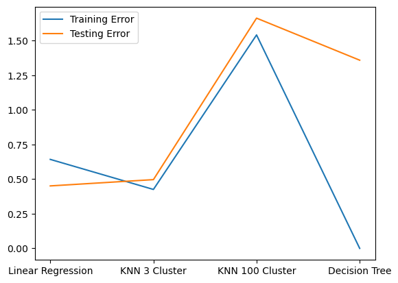

import pandas as pd
from palmerpenguins import load_penguins
import numpy as np
from sklearn.compose import ColumnTransformer, make_column_selector
from sklearn.impute import SimpleImputer
from sklearn.preprocessing import StandardScaler, OneHotEncoder
from sklearn.linear_model import LinearRegression
from sklearn.neighbors import KNeighborsRegressor
from sklearn.tree import DecisionTreeRegressor
from sklearn.model_selection import train_test_split
from sklearn.pipeline import Pipeline
from sklearn.metrics import mean_squared_error
import matplotlib.pyplot as plt
#rename penguins dataset
penguins = load_penguins()
#drop NA
penguins = penguins.dropna()
#categorical dummify
cat_transform = Pipeline([
("impute", SimpleImputer(strategy="most_frequent")),
("dummy", OneHotEncoder())
])Palmer Penguins Modeling
Import the Palmer Penguins dataset and print out the first few rows.
Suppose we want to predict bill_depth_mm using the other variables in the dataset.
Dummify all variables that require this.
Let’s use the other variables to predict bill_depth_mm. Prepare your data and fit the following models on the entire dataset:
- Your best multiple linear regression model from before
- Two kNN models (for different values of K)
- A decision tree model
Create a plot like the right plot of Fig 1. in our Model Validation chapter with the training and test error plotted for each of your four models.
Which of your models was best?
#numeric transformer (standardize)
num_transform = Pipeline([
("scalar", StandardScaler())
])
#column transformer (apply the dummification)
ct = ColumnTransformer([
('num', num_transform, make_column_selector(dtype_include=np.number)),
("cat", cat_transform, make_column_selector(dtype_include=object))
])
#predictor and response variables
X = penguins.drop(columns=['bill_depth_mm'])
y = penguins['bill_depth_mm']
#train test split
X_train, X_test, y_train, y_test = train_test_split(X, y, test_size=0.2, random_state=1)
#linear regression pipeline
pipeline_lr = Pipeline(
[("preprocessor", ct),
("regressor", LinearRegression())]
)
#knn pipeline 3 clusters
pipeline_knn3 = Pipeline(
[("preprocessor", ct),
("kNN", KNeighborsRegressor(n_neighbors=3))]
)
#knn pipeline 100 clusters
pipeline_knn100 = Pipeline(
[("preprocessor", ct),
("kNN", KNeighborsRegressor(n_neighbors=100))]
)
#decision tree pipeline
pipeline_tree = Pipeline(
[("preprocessor", ct),
("decision", DecisionTreeRegressor())]
)#fit the models
pipeline_lr.fit(X_train, y_train)
pipeline_knn3.fit(X_train, y_train)
pipeline_knn100.fit(X_train, y_train)
pipeline_tree.fit(X_train, y_train)Pipeline(steps=[('preprocessor',
ColumnTransformer(transformers=[('num',
Pipeline(steps=[('scalar',
StandardScaler())]),
<sklearn.compose._column_transformer.make_column_selector object at 0x14def7c50>),
('cat',
Pipeline(steps=[('impute',
SimpleImputer(strategy='most_frequent')),
('dummy',
OneHotEncoder())]),
<sklearn.compose._column_transformer.make_column_selector object at 0x14de58260>)])),
('decision', DecisionTreeRegressor())])In a Jupyter environment, please rerun this cell to show the HTML representation or trust the notebook. On GitHub, the HTML representation is unable to render, please try loading this page with nbviewer.org.
Pipeline(steps=[('preprocessor',
ColumnTransformer(transformers=[('num',
Pipeline(steps=[('scalar',
StandardScaler())]),
<sklearn.compose._column_transformer.make_column_selector object at 0x14def7c50>),
('cat',
Pipeline(steps=[('impute',
SimpleImputer(strategy='most_frequent')),
('dummy',
OneHotEncoder())]),
<sklearn.compose._column_transformer.make_column_selector object at 0x14de58260>)])),
('decision', DecisionTreeRegressor())])ColumnTransformer(transformers=[('num',
Pipeline(steps=[('scalar', StandardScaler())]),
<sklearn.compose._column_transformer.make_column_selector object at 0x14def7c50>),
('cat',
Pipeline(steps=[('impute',
SimpleImputer(strategy='most_frequent')),
('dummy', OneHotEncoder())]),
<sklearn.compose._column_transformer.make_column_selector object at 0x14de58260>)])<sklearn.compose._column_transformer.make_column_selector object at 0x14def7c50>
StandardScaler()
<sklearn.compose._column_transformer.make_column_selector object at 0x14de58260>
SimpleImputer(strategy='most_frequent')
OneHotEncoder()
DecisionTreeRegressor()
#calculate training and test error
train_error_lr = mean_squared_error(y_train, pipeline_lr.predict(X_train))
test_error_lr = mean_squared_error(y_test, pipeline_lr.predict(X_test))
train_error_knn3 = mean_squared_error(y_train, pipeline_knn3.predict(X_train))
test_error_knn3 = mean_squared_error(y_test, pipeline_knn3.predict(X_test))
train_error_knn100 = mean_squared_error(y_train, pipeline_knn100.predict(X_train))
test_error_knn100 = mean_squared_error(y_test, pipeline_knn100.predict(X_test))
train_error_dt = mean_squared_error(y_train, pipeline_tree.predict(X_train))
test_error_dt = mean_squared_error(y_test, pipeline_tree.predict(X_test))
train_errors = [train_error_lr, train_error_knn3, train_error_knn100, train_error_dt]
test_errors = [test_error_lr, test_error_knn3, test_error_knn100, test_error_dt]
#plotting
x = range(1, 5)
plt.plot(x, train_errors, label='Training Error')
plt.plot(x, test_errors, label='Testing Error')
plt.xticks(ticks=x, labels=['Linear Regression', 'KNN 3 Cluster', 'KNN 100 Cluster', 'Decision Tree'])
plt.legend()
plt.show()
The best model is the KNN 3 Cluster model (lowest training and testing error).